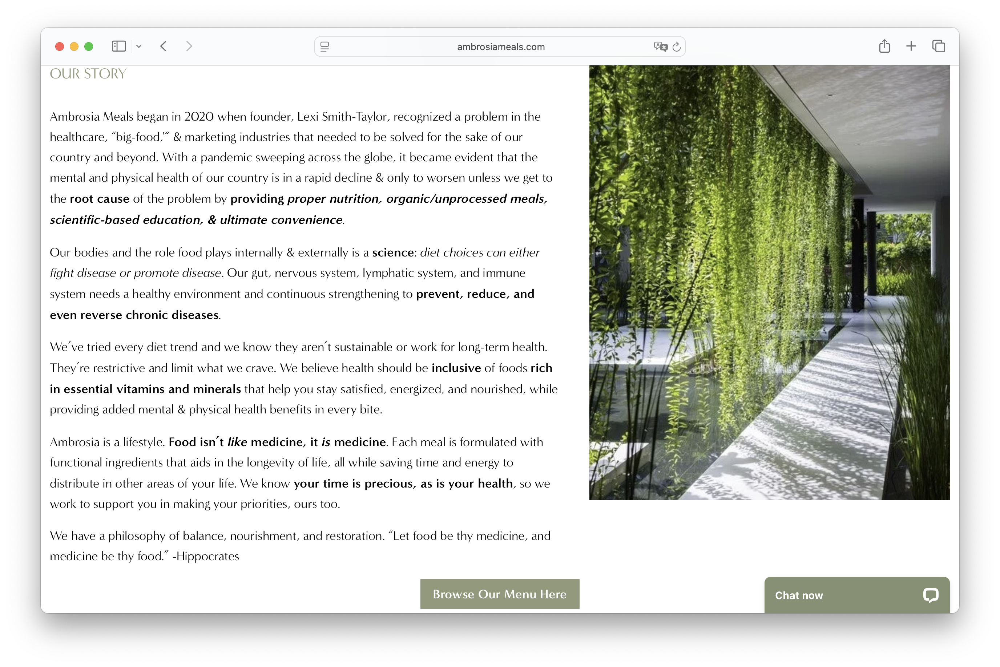
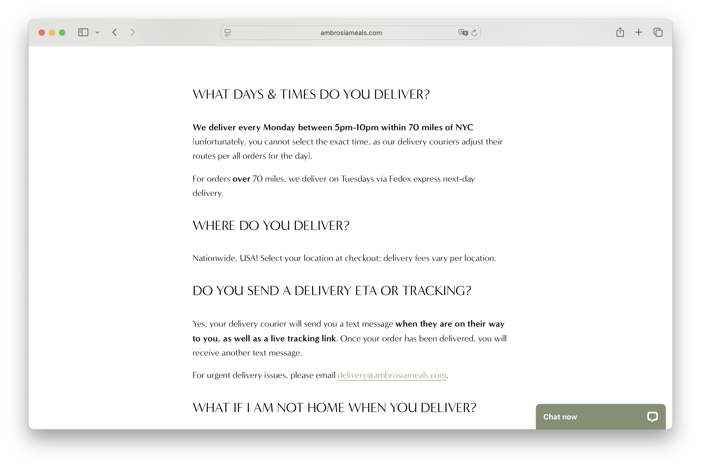

The Safe Plate
The Safe Plate is a specialized meal prep service designed for people with dietary restrictions who are tired of settling for “good enough.” We create chef-crafted, clearly labeled meal prep kits that can be free from common allergens and tailored to specific needs—so you can eat confidently, not cautiously.
The Safe Plate serves individuals with dietary restrictions who want convenient, trustworthy meals without sacrificing flavor or variety. This includes people managing food allergies, intolerances, gastrointestinal conditions, or other chronic health concerns who are tired of constantly reading labels, modifying orders, or cooking the same meals over and over again.
The primary task of The Safe Plate’s target customer is to obtain reliable, restriction-compliant meal prep kits with minimal cognitive load. Their primary goal is to maintain their health and peace of mind while experiencing convenience and enjoyment.
ambrosiameals.com/?srsltid=AfmBOoqxSvwxaEBwffSyvCx_5ECeWiIONbTMQioxxl0b1doi2_SyFXWm
 Food should nourish you, not stress you out. At The Safe Plate, we prepare chef-crafted meals designed specifically for people with dietary restrictions. Every ingredient is intentional. Every meal is clearly labeled. Every step prioritizes safety. Because you deserve more than “I think this is okay.”
[Heaping of healhy food]
Grilled chicken breast, rosemary potatoes, sautéed zucchini, and a garlic-infused olive oil drizzle.
$15.00
Pan-seared turkey with quinoa, roasted carrots, and a light ginger glaze.
$14.00
Tender beef with parsnips, carrots, and thyme-infused jus.
$17.00
Fresh salmon with white rice, steamed green beans, and lemon-dill oil.
$18.00
Hearty lentils simmered with herbs, carrots, and fresh spinach.
$13.00
Chopped chicken, cucumber, shredded carrots, olive oil & fresh herbs.
$12.00
Bell peppers filled with seasoned turkey and fluffy rice.
$13.00
Scrambled eggs (or tofu alternative), roasted potatoes, and sautéed greens
$11.00
[Close up of one of the dishes on the menu]
The Safe Plate was created for people who can’t afford to “just try it and see.” For those who read every label, ask every question, and plan every meal carefully, because their health depends on it. We believe safety should never mean sacrificing flavor, variety, or convenience. That’s why every meal we prepare is crafted with intention, transparency, and strict safety protocols at every step. From ingredient sourcing to packaging, nothing is an afterthought. Our mission is simple: to give you back peace of mind at the table. Because food should bring comfort, connection, and nourishment, not stress. At The Safe Plate, safety is the standard. Delicious is just part of the deal.
[Person handling food]
The Safe Plate 1234 Seaside Avenue San Luis Obispo, CA 93401
[Illustrated food pattern]